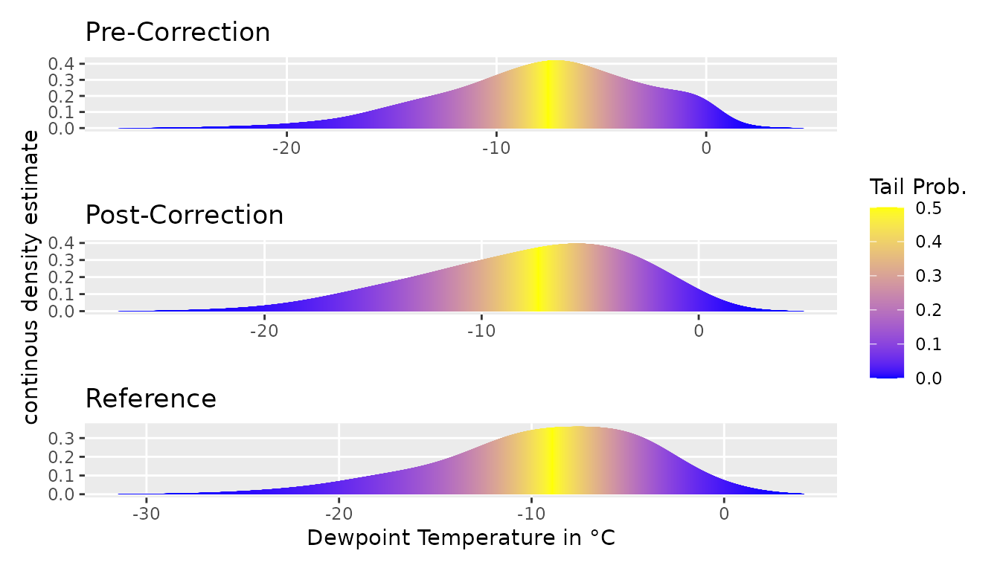
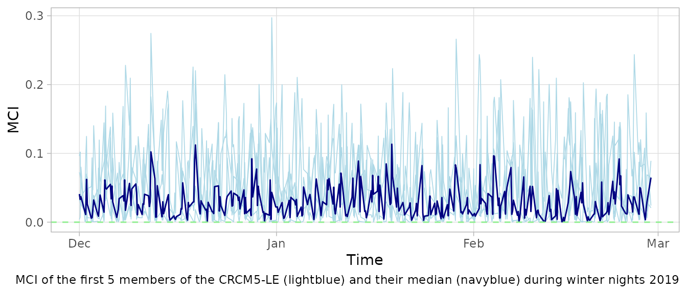

VBC in the Alps: Multivariate Bias Correction and Evaluation
2024-10-25
vbc_alps.Rmd
library(data.table)
library(ggplot2)
library(knitr)
library(leaflet)
library(patchwork)
theme = theme(strip.text.y = element_text(face = "bold"),
panel.grid.minor = element_blank())Allgäuer Hochalpen
The Allgäuer Hochalpen are a mountainous nature reserve in the northern Alps at the border to Austria. With up to 2,600 meters above sea level, the nature reserve is the first northern mountain range in the Alps. Due to this regional exposition, the Allgäuer Hochalpen are known for their high precipitation rates and cold temperatures. The complex topography of the region leads to a high regional climatic variability which is challenging for climate models to simulate.
Data
This exemplary showcases the potentials of the VBC package to correct
for the bias in the climate model data of the Allgäuer Hochalpen during
2011 to 2020 for 5 key climate variables. The error prone data consists
of the 50 member of the regional climate model large ensemble, CRCM5-LE
in a 12km resolution. mp_dts contains the model data during
projection (2011 - 2020), mc_dts the model data during the
calibration period (1981 - 2010). The CRCM-5 data are corrected using
the SDCLIREF version2 reference data in 12km resolution. The reference
data oc_dt is used to correct the model data.
op_dt contains the targeted distribution in is held out for
elevation purposes. For more information, see
Funk, H., Ludwig, R., Kuechenhoff, H., & Nagler, T. (2024). Towards more realistic climate model outputs: A multivariate bias correction based on zero-inflated vine copulas. arXiv preprint <arXiv:2410.15931>.
Lehr- und Forschungseinheit für physische Geographie und komplexe Umweltsysteme, & Wood, R. R. (2024). SDCLIREFv2 (Version 2) [Data set]. Zenodo. https://doi.org/10.5281/zenodo.13221576
Funk, H. (2024). Bias Correction of CRCM5-LE for Hydrological Bavaria (1.0.0) [Data set]. Zenodo. https://doi.org/10.5281/zenodo.13348397
temp_file <- tempfile(fileext = ".rda")
url = "https://zenodo.org/records/13348397/files/PEG-Iller-Kempten_14_12.rda?download=1"
download.file(url, temp_file, quiet = TRUE)
load(temp_file)
unlink(temp_file)Bias Correction
The bias correction is performed using the VBC package. For demonstration purposes, the bias correction is performed for the winter nights in the Allgäuer Hochalpen. The winter nights are defined as the hours between 21:00 and 06:00 in the months December, January, and February.
We showcase the bias correction on the first 5 members of the CRCM5-LE. Therefore we subset the model data.
members <- mp_dts$member
mem_5 = c("kba", "kbb", "kbc", "kbd", "kbe")
members = members[members %in% mem_5]
mp_dts = mp_dts[member %in% mem_5, ][, member := NULL]
mc_dts = mc_dts[member %in% mem_5, ][, member := NULL]
split_mp <- split(mp_dts, members)To correct for the winter nights in the first 5 members of the
CRCM5-LE, we use the vbc_tsub function. The function
corrects the model data using the reference data oc_dt. For
the marginal distributions, we specify that the lower bound by
xmin and the type of the marginal distribution by
type. The type c indicates a continuous
distribution, while zi indicates a zero-inflated
distribution. The bias correction is performed using the
TLL family of vine copulas. The truncation level is set to
infinity.
The function now efficiently corrects the model data for each
temporal subset in t_subs and each member in
split_mp.
margins_controls = list(
xmin = c(NaN, 0, NaN, 0, 0), type = c("c", "zi", "c", "zi", "c")
)
vbc = vbc_tsub(mp = split_mp, mc = mc_dts, rc = oc_dt, t_subs = winter_night,
margins_controls = margins_controls, family_set = "tll",
trunc_lvl = Inf)#> An ensemble member is done.
#> An ensemble member is done.
#> An ensemble member is done.
#> An ensemble member is done.
#> An ensemble member is done.#> subset for 21036 hours and 1212 month done.Evaluation
Distributional Similarity
The bias correction is evaluated by comparing the corrected model
data with the reference data op_dt. Using
plot_tails, VBC provides a visual tool to compare the
marginal distribution of a climate variable before and after the bias
correction with the target reference data. Ideally, the corrected model
data should be as close as possible to the reference data.
plot_tails(mp_dts[hour(time) %in% c(21, 0, 3, 6) &
month(time) %in% c(12, 1, 2), ], "dew", scale_d = 5,
offset = .1) + theme +
ggtitle("Pre-Correction") + ylab("") + xlab("") +
theme(legend.position = "none") +
plot_tails(rbindlist(vbc), "dew", scale_d = 5, offset = 1) + theme +
ggtitle("Post-Correction") + xlab("") +
plot_tails(op_dt[hour(time) %in% c(21, 0, 3, 6) &
month(time) %in% c(12, 1, 2), ], "dew", scale_d = 5,
offset = 1) + theme + ylab("") +
xlab("Dewpoint Temperature in °C") +
ggtitle("Reference") + theme(legend.position = "none") +
plot_layout(ncol = 1)
To quantify the improvement of the bias correction, we calculate the Wasserstein distance between the corrected model data and the reference. The Wasserstein distance is a measure of the distance between two probability distributions.
wd_post = sapply(vbc, function(mem) {
calc_wasserstein(op_dt[hour(time) %in% c(21, 0, 3, 6) &
month(time) %in% c(12, 1, 2), 3], mem[, 3],
, scale_dta = "none")
})
wd_pre = sapply(split_mp, function(mem) {
calc_wasserstein(op_dt[hour(time) %in% c(21, 0, 3, 6) &
month(time) %in% c(12, 1, 2), 3],
mem[hour(time) %in% c(21, 0, 3, 6) &
month(time) %in% c(12, 1, 2), 3],
scale_dta = "none")
})
improvement = wd_pre[2, ] - wd_post[2,]
kable(cbind("WD2 pre correction" = wd_pre[2, ],
"WD2 post correction" = wd_post[2,],
"imporvement after correction" = improvement), digits = 2)| WD2 pre correction | WD2 post correction | imporvement after correction | |
|---|---|---|---|
| kba | 2.16 | 1.91 | 0.25 |
| kbb | 1.43 | 1.25 | 0.19 |
| kbc | 1.41 | 1.22 | 0.19 |
| kbd | 1.91 | 1.84 | 0.07 |
| kbe | 2.07 | 1.97 | 0.10 |
At the univariate level of dew point temperature, the bias correction improves the model data for any of the 5 members of the CRCM5-LE.
wd_post = sapply(vbc, function(mem) {
calc_wasserstein(op_dt[hour(time) %in% c(21, 0, 3, 6) &
month(time) %in% c(12, 1, 2), 1:5], mem[, 1:5])
})
wd_pre = sapply(split_mp, function(mem) {
calc_wasserstein(op_dt[hour(time) %in% c(21, 0, 3, 6) &
month(time) %in% c(12, 1, 2), 1:5],
mem[hour(time) %in% c(21, 0, 3, 6) &
month(time) %in% c(12, 1, 2), 1:5])
})
improvement = wd_pre - wd_post
kable(cbind("WD2 pre correction" = wd_pre[2, ],
"WD2 post correction" = wd_post[2,],
"imporvement after correction" = improvement[2,]), digits = 2)| WD2 pre correction | WD2 post correction | imporvement after correction | |
|---|---|---|---|
| kba | 6.09 | 1.12 | 4.97 |
| kbb | 6.38 | 1.15 | 5.23 |
| kbc | 6.48 | 1.30 | 5.19 |
| kbd | 6.20 | 1.02 | 5.18 |
| kbe | 6.13 | 1.06 | 5.08 |
On the global multivariate distribution, the bias correction improves the model data for any of the 5 members to a 6th of its 2nd Wasserstein Distance to a constant level of 1.
Preservation of Weather
When correcting the model data, it is important that the bias correction method preserves the course of weather patterns of the model data. This way the original characteristics of the climate model are still maintained. The MCI is a measure of the preservation of the weather patterns.
mci = mapply(function(before, after) {
idx = which(hour(before$time) %in% c(21, 0, 3, 6) &
month(before$time) %in% c(12, 1, 2))
calc_mci(before[idx, 1:5],after[, 1:5],
time_p = before$time[idx])$mci
}, before = split_mp, after = vbc)
mci = cbind.data.frame(mci, time = vbc[[1]]$time)
mci$median = apply(mci[, 1:5], 1, median)The MCI of the first 5 members of the CRCM5-LE during winter nights 2019 is mostly between 0 and 0.1. A MCI of 0 indicates an non-invasive bias correction that did not change the course of the weather patterns from the model data. The MCI is limited at indicating a maximal change in the course of weather.
mci2020 = mci[mci$time > "2019-11-01" & mci$time < "2020-03-01", ]
ggplot(mci2020, aes(x = time)) +
geom_line(mapping = aes(y = kba), colour = "lightblue", linewidth = 0.3) +
geom_line(mapping = aes(y = kbb), colour = "lightblue", linewidth = 0.3) +
geom_line(mapping = aes(y = kbc), colour = "lightblue", linewidth = 0.3) +
geom_line(mapping = aes(y = kbd), colour = "lightblue", linewidth = 0.3) +
geom_line(mapping = aes(y = kbe), colour = "lightblue", linewidth = 0.3) +
geom_line(mapping = aes(y = median), colour = "navyblue") +
geom_hline(yintercept = 0, linetype = "dashed", colour = "lightgreen") +
theme_light() + theme +
labs(
caption = "MCI of the first 5 members of the CRCM5-LE (lightblue) and their median (navyblue) during winter nights 2019",
x = "Time", y = "MCI")
The average MCI of a corrected time series can be used for the global assessment of the correction. With an median inconsistency of 0.03, we can assume the weather in winter nights 2019/2020 to be mainly preserved.
| median | sd | |
|---|---|---|
| kba | 0.036 | 0.058 |
| kbb | 0.030 | 0.057 |
| kbc | 0.028 | 0.064 |
| kbd | 0.016 | 0.046 |
| kbe | 0.025 | 0.054 |